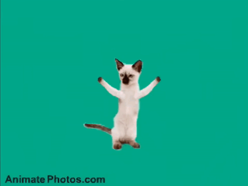

First title
First paragraph
Second title
Second paragraph
Third title
Third paragraph
First container

Відповіді на КЗ
- З самого тегу(одинарного або подвійного), атрибутів та вмісту
- Для зміни властивостей - колір тексту, каринка, шрифт
- body, title, meta, head, та інші крім доктайпа, де вказується що браузер повинен справді відкрити хтмл а не наприклад пдф
- є визначення типу документа, яке допомагає браузерам правильно відображати вебсторінки
- html, бо це самий батьківський елемент. До нього можна доаргументувати lang, style, class
- ну типу використовує аргументи для керування самим вікном(?)
- це розділ для вкладки сайта, там лежить метадата, назва та фавікон
- це текст для search engines
- Щоб змінювати зовшній вигляд глобально (сторінка/контейнер)